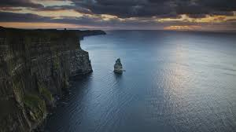
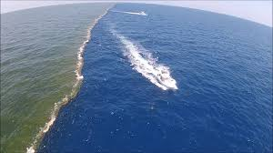
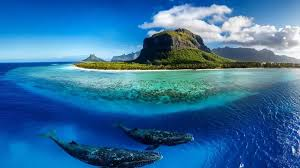

- The Atlantic Ocean is the second largest ocean on Earth, covering about 20% of the planet's surface
- It lies between the continents of the Americas to the west and Europe and Africa to the east
- The Atlantic Ocean is roughly S-shaped and is divided into the North and South Atlantic by the Equator
- Its deepest point is the Puerto Rico Trench, reaching about 8,380 meters (27,493 feet)
- The Atlantic plays a vital role in global trade and climate, featuring major sea routes and diverse marine life
Atlantic Ocean

- The Pacific Ocean is the largest and deepest ocean on Earth, covering about one-third of its surface
- It stretches from the Arctic in the north to the Southern Ocean (or Antarctica) in the south and lies between Asia/Australia and the Americas
- Its total area is approximately 165 million square kilometers (63 million square miles)—more than all Earth's landmasses combined
- The deepest point on Earth, the Mariana Trench, reaching about 11,000 meters (36,000 feet), is located in the Pacific
- The Pacific was named by Ferdinand Magellan for its “peaceful” waters, though it is home to vast marine life and active geologic features like the “Ring of Fire”
Pacific Ocean

- The Indian Ocean is the third largest ocean in the world, covering about 20% of the Earth's ocean area
- It is bordered by Asia, Africa, Australia, and the Southern Ocean (Antarctica)
- The Indian Ocean is triangular in shape and is named after India on its northern border
- It is the warmest ocean and experiences important weather patterns like monsoons and cyclones
- The Indian Ocean is a major route for world trade and is home to diverse marine life such as whales and turtles
Indian Ocean

- The Arctic Ocean is the smallest and shallowest of the world's oceans, covering about 14 million square kilometers (5.4 million square miles)
- It is centered on the North Pole and surrounded by Eurasia, North America, Greenland, and several islands
- Much of the Arctic Ocean is covered by ice year-round, with the ice thickness and extent changing by season
- Its average depth is around 1,000 meters (3,280 feet), and the deepest point is about 5,500 meters (18,050 feet)
- The Arctic Ocean faces significant impacts from climate change, including shrinking sea ice and rising global importance
Arctic Ocean

- The Southern Ocean surrounds Antarctica and is the fourth largest ocean, larger than the Arctic but smaller than the Indian Ocean
- It is known for the powerful Antarctic Circumpolar Current, the strongest and longest ocean current, which rapidly circulates cold water eastward around the
- Sea ice expands dramatically in winter, nearly doubling Antarctica’s size, and recedes in summer, showing one of the greatest seasonal changes on Earth
- The Southern Ocean supports rich ecosystems, with nutrient-rich waters sustaining vast populations of phytoplankton, krill, whales, seals, and penguins
- It experiences some of the strongest winds and largest waves on Earth and plays a major role in global climate by regulating heat and carbon dioxide